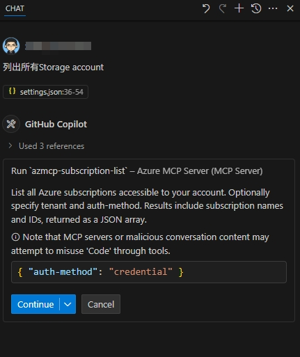

在 GitHub Copilot 中使用 MCP
MCP 全称 Model Context Protocol，是一种用于在不同的 AI 模型之间共享上下文信息的协议。它允许开发者在不同的模型之间传递信息，从而实现更复杂的任务和更好的协作。最早由 Cline Labs 提出的一个概念，后来被 GitHub Copilot 采纳并实现。
MCP 服务器是一个中间件，负责在不同的 AI 模型之间传递上下文信息。它可以接收来自一个模型的信息，并将其转换为另一个模型可以理解的格式，从而实现不同模型之间的协作。
GitHub Copilot 现在也可以方便地使用 MCP 服务器来实现更复杂的任务。通过 MCP 服务器，开发者可以将不同的 AI 模型连接在一起，从而实现更强大的功能。
基本配置
我们以 GitHub Copilot 的 MCP 服务器为例，来介绍如何配置和使用 MCP。
首先，确保你已经安装了 GitHub Copilot 插件，并且已经登录了你的 GitHub 账号。
先在 Copilot Chat 对话框最下面中间的小菜单点开选择 Agent。然后点击对话框上左下角的螺丝刀和扳手图标。弹出的浮层菜单可能已经有很多内容，滚动到最下面，点击“Add more tools...”，再点“+Add MCP Server”，再点 NPM Package。在弹出的对话框中输入 MCP 的 npm 包名，比如 @modelcontextprotocol/server-github，按回车键，然后点击“Add”。
默认名字是 github，回车确认即可。弹出 Choose where to save the configuration 时，选择 Workspace Settings， VS Code 会在当前工程下创建 .vscode/mcp.json 文件；如果选择 User Settings，则会在在用户设置的 settings.json 文件里添加 "mcp" 段。
在这个文件中的内容找到 "GITHUB_PERSONAL_ACCESS_TOKEN": "<YOUR_TOKEN>"，把 <YOUR_TOKEN> 替换成你自己的 GitHub 个人访问令牌，保存这个文件。
这时，Copilot Chat 对话框左上角的图标会显示需要刷新，点击刷新，稍后螺丝刀和扳手图标会显示数量增加了，表示添加成功。
使用 MCP
回到打开的配置文件，点击 MCP 名称上的 Start，状态变成 Running，表示 MCP 服务器已经启动。

配置上了GitHub Copilot 的 MCP 服务器后，使用对话 列出所有repo名字。，就会列出你所有的 repo 名字。
Azure MCP
如果你想使用 Azure MCP，最简单的方式就是在 .vscode/mcp.json 中 添加以下配置信息：
{
"servers": {
"Azure MCP Server": {
"command": "npx",
"args": [
"-y",
"@azure/mcp@latest",
"server",
"start"
]
}
}
}
在 "Azure MCP Server" 上点击 Start，状态变成 Running，表示 Azure MCP 服务器已经启动。
然后同样在 GitHub Copilot 的螺丝刀和扳手图标旁边点击刷新就可以使用了。
Azure MCP 认证
这个 Azure MCP 和GitHb MCP 不同，它不需要在配置文件中明文写入任何验证的凭据。
Azure MCP 服务器能够无缝集成你的主机操作系统的认证机制，让你轻松上手！我们底层使用了 Azure Identity，通过 DefaultAzureCredential 实现，认证顺序如下：
- 环境变量（
EnvironmentCredential）—— 适合 CI/CD 流水线 - 共享令牌缓存（
SharedTokenCacheCredential）—— 复用其他工具的缓存令牌 - Visual Studio（
VisualStudioCredential）—— 使用你的 Visual Studio 认证 - Azure CLI（
AzureCliCredential）—— 使用你已登录的 Azure CLI 账号 - Azure PowerShell（
AzurePowerShellCredential）—— 使用 Az PowerShell 登录 - Azure Developer CLI（
AzureDeveloperCliCredential）—— 使用 azd 登录 - 交互式浏览器（
InteractiveBrowserCredential）—— 如有需要，回退到浏览器登录
如果你已经通过上述任意方式登录，Azure MCP 服务器会自动使用这些凭据。请确保你在 Azure 中拥有正确的授权权限（如对 Storage account 的读取权限），可通过 RBAC（基于角色的访问控制）实现。想了解更多 Azure RBAC 授权系统，请访问这个链接。
所以通常咱们只需要在操作系统中登录 Azure CLI 即可。然后在 GitHub Copilot 对话框中输入提示语，比如 列出所有Storage account名字。，就可以列出你所有的 Storage account 名字。首次提问时，Copilot Agent 会提示确认权限。

点击 Continue 后，Copilot Agent 会自动获取 Azure 订阅信息，并显示在对话框中。
由于上述Azure验证方式可能从多处获取凭据，所以如果你有多个 Azure 订阅，可以在提问时加上 tenant ID 来明确指定订阅，比如 列出所有Storage account名字。tenant: 12345678-abcd-efgh-ijkl-9876543210ab。这样 Copilot Agent 就会使用指定的 tenant ID 来获取对应的 Azure 资源。
总结
MCP 服务器为 GitHub Copilot 提供了强大的上下文共享能力，使得不同的 AI 模型可以更好地协作。通过简单的配置，开发者可以轻松地使用 MCP 服务器来实现更复杂的任务。